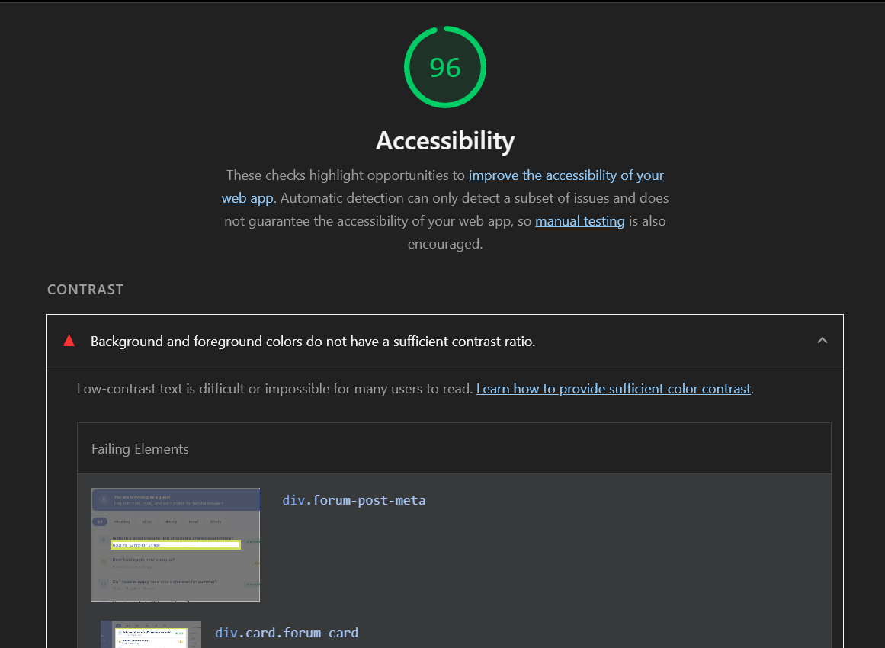
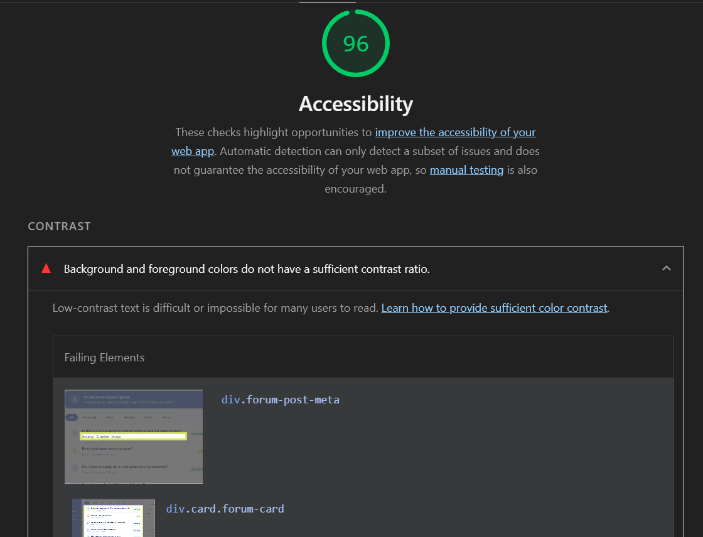
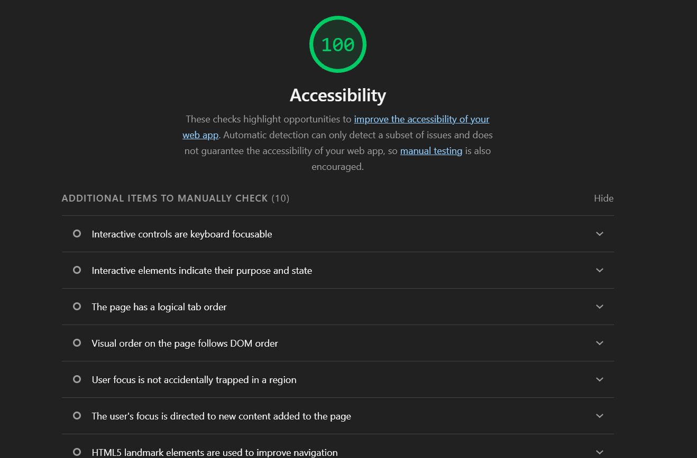
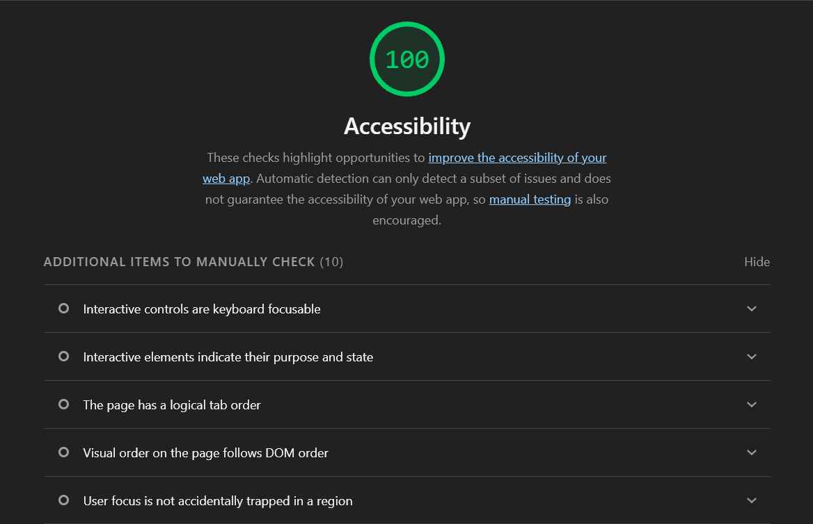

Both pages: 96 → 100
forum.html
rewards.html
Initial audit and failing items
Both pages scored 96. On both, the only failing automated audit was "Background and foreground colors do not have a sufficient contrast ratio". Every other audit passed.
Forum page: 11 failing elements
Lighthouse lists each low-contrast text element followed by the card it sits in (div.card.forum-card, div.card, div.card.forum-verified-card). The cards themselves are fine; only the text inside them fails.
| Failing element | What it shows | Count |
|---|---|---|
div.forum-post-meta | "Housing · 12 replies · 2h ago" under each post | 6 |
span.channel-count | Post counts in the Channels card (48, 36, 29, 61) | 4 |
p.forum-verified-sub | "Checked by moderators…" text in the Verified answers card | 1 |

Rewards page: 9 failing elements
| Failing element | What it shows | Count |
|---|---|---|
span.badge-count | "· 4 of 8" next to the Badges heading | 1 |
span.badge-label.locked-lbl | Names of locked badges: Helper, Settled, Scholar, Local | 4 |
p.lb-hint | "140 pts behind #3. Attend 2 events to catch up." | 1 |
div.redeem-cost | Points cost of each reward (150, 200, 180 pts) | 3 |

One colour token was too light
All of the secondary text on both pages uses --mid-blue-2 (#5B82E0) from our shared app.css, and the locked badge labels use the even lighter --mid-blue-3 (#9DB5EE). Normal-size text needs at least 4.5:1 contrast against its background, and neither colour reaches it.
--mid-blue-2 (before)
3.67:1 on white 3.42:1 on #F4F7FE
--mid-blue-3 (before)
2.04:1 on white
--mid-blue-1 (after)
Housing · 12 replies · 2h ago
5.42:1 on white 5.05:1 on #F4F7FEWhy it matters: low-contrast text is hard to read for people with low vision or colour-vision deficiency, and for anyone using their phone in bright sunlight. This is exactly the kind of text our users need: reply counts, how many points a reward costs, and how far they are from the next rank. WCAG 2.2 success criterion 1.4.3 Contrast (Minimum), Level AA, requires 4.5:1 for normal text.
Instead of inventing a new colour, I used --mid-blue-1 (#3A63D0), which is already in our design system one step darker. The text keeps the same blue look and still reads as secondary next to the navy headings.
The seven fixes
| # | Page | Element | Background | Before | After |
|---|---|---|---|---|---|
| 1 | Forum | Post meta line (.forum-post-meta, 6 posts) | White | 3.67:1 | 5.42:1 |
| 2 | Forum | Channel post counts (.channel-count, 4 channels) | White | 3.67:1 | 5.42:1 |
| 3 | Forum | Verified answers text (.forum-verified-sub) | White | 3.67:1 | 5.42:1 |
| 4 | Rewards | Badge count "· 4 of 8" (.badge-count) | White | 3.67:1 | 5.42:1 |
| 5 | Rewards | Locked badge names (.locked-lbl, 4 badges) | White | 2.04:1 | 5.42:1 |
| 6 | Rewards | Leaderboard hint (.lb-hint) | #F4F7FE | 3.42:1 | 5.05:1 |
| 7 | Rewards | Reward costs (.redeem-cost, 3 rewards) | White | 3.67:1 | 5.42:1 |
Where I made the change: each fix is in a small <style> block in the <head> of that page, not in app.css. Some of these classes (.badge-count, .locked-lbl) are shared with index.html and profile.html, which teammates own, so editing app.css would have changed their pages too. Scoping the fix to my two pages keeps everyone else's work untouched.
Forum page text contrast
What was wrong
The post meta line, the channel counts and the verified-answers description were all set to --mid-blue-2 in app.css, which gives only 3.67:1 on the white cards.
Before (app.css)
.forum-post-meta {
font-size: .82rem;
color: var(--mid-blue-2);
}
.channel-count {
font-weight: 800;
color: var(--mid-blue-2);
font-size: .9rem;
}
.forum-verified-sub {
font-size: .85rem;
color: var(--mid-blue-2);
line-height: 1.5;
}After (added to forum.html <head>)
<style>
/* Post category, replies and time */
.forum-post-meta {
color: var(--mid-blue-1);
}
/* Post counts in the channel list */
.channel-count {
color: var(--mid-blue-1);
}
/* "Checked by moderators..." text */
.forum-verified-sub {
color: var(--mid-blue-1);
}
</style>#5B82E0.
#3A63D0. The layout is unchanged and the small text is crisper.Rewards page text contrast
What was wrong
Three pieces of secondary text used --mid-blue-2. The leaderboard hint was the worst of these at 3.42:1, because it sits on the pale page-background box rather than on white. The locked badge names used --mid-blue-3 at only 2.04:1, which is barely readable.
Before (app.css)
.card-title .badge-count {
font-size: .8rem;
color: var(--mid-blue-2);
font-weight: 500;
}
.badge-label.locked-lbl {
color: var(--mid-blue-3);
}
.lb-hint {
font-size: .84rem;
color: var(--mid-blue-2);
background: var(--page-bg);
…
}
.redeem-cost {
font-size: .82rem;
color: var(--mid-blue-2);
}After (added to rewards.html <head>)
<style>
/* "· 4 of 8" badge count,
points cost of each reward */
.card-title .badge-count,
.redeem-cost {
color: var(--mid-blue-1);
}
/* Leaderboard hint on page-bg box */
.lb-hint {
color: var(--mid-blue-1);
}
/* Locked badge names */
.badge-label.locked-lbl {
color: var(--mid-blue-1);
}
</style>Do locked badges still look locked? Yes. Their names are still lighter than the navy names of earned badges, the badge shapes are still pale with a padlock icon, and each badge already has an aria-label such as "Helper badge – locked". So the locked state never depended on the faint text colour alone.
#9DB5EE, other text at #5B82E0.
#3A63D0. Locked badges are still clearly locked.Re-run evidence
I re-ran Lighthouse on both pages with the same settings (Accessibility only). The contrast audit now passes on both, and both pages score 100. Lighthouse lists the remaining items under "Additional items to manually check", which no automated tool can test.
How I verified the changes
- Re-ran Lighthouse in Chrome DevTools on both pages: Accessibility 100, with no failing audits.
- Checked the new colour
#3A63D0with the WCAG contrast formula: 5.42:1 on white cards and 5.05:1 on the#F4F7FEhint box. Both are above 4.5:1. - Opened
index.htmlandprofile.htmlto confirm they look exactly as before, sinceapp.csswas not edited. - Checked visually that layout, spacing and the earned/locked badge distinction are unchanged.
- Remembered that a score of 100 only covers automated checks. Lighthouse cannot judge things like tab order or whether focus moves to new content, so these still need testing with the keyboard.